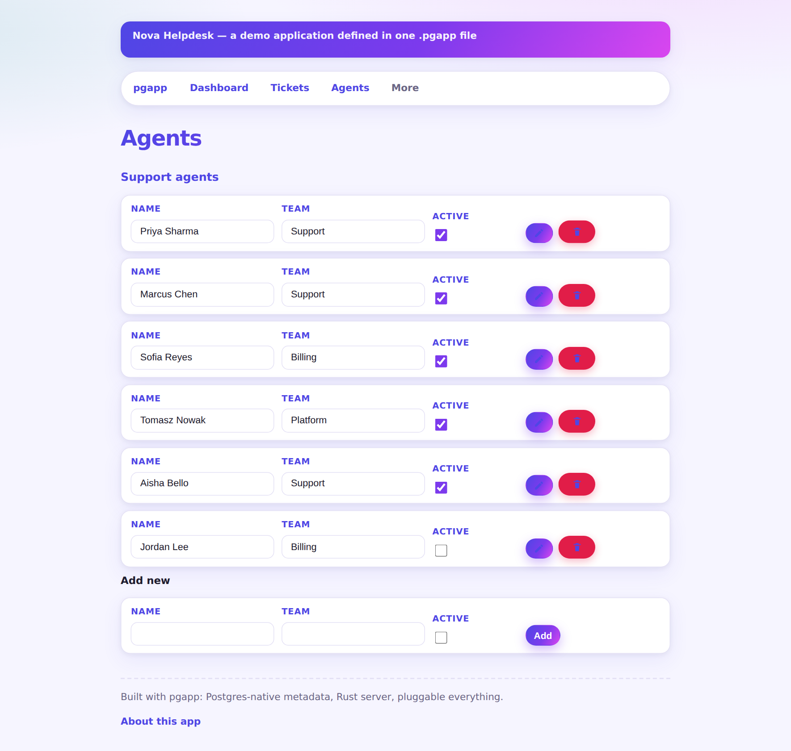

An EditableTable renders every row as its own inline form — change a value, hit save, done. Plus an add-new row at the bottom. No list/edit round-trip for data you just want to tweak in place.

For data you just want to tweak in place, an EditableTable skips the list/edit round-trip entirely.
An EditableTable renders every row as its own inline form — change a value, hit save, done. Plus an add-new row at the bottom. No list/edit round-trip for data you just want to tweak in place.
